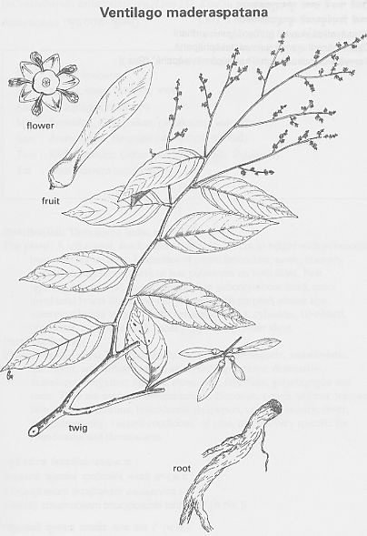

|
ECONOMICALLY
IMPORTANT PLANTS OF INDIA |
| Under-utilized Food and Fodder species and their wild relatives | Contributed by Ms.M.L Annapurna And Dr. Dhanapal, UAS, Bangalore |
Ventilago madraspatana Gaertn.
Taxonomic Details

----- Correct Name
----- Classification
----- Synonyms
----- Common Names
Other Biological Details
----- Habit and Habitat
----- Diagnostic Features
----- Reproductive Biology
---------- Breeding System
---------- Phenology
---------- Pollinators
---------- Seed Biology
----------Seed Germination
------ Cultivation
----- Major Pests and Diseases
Economic Potential and Uses
----- Parts Used
----- Uses
----- Harvesting Practices
----- Produce and Products
----- Chemistry
----- Processing Techniques
----- Other uses
----- Economic Potential to the
Country
----- Export Potential
Miscellaneous Information
Literature
DIAGNOSTIC FEATURES:
Flowers are slender simple or paniculate spikes. fruits 1 1/2-2
x2/3 in., nut girt at the base. young branches and leaves glabrous or only slightly
pubesecent. leaves 2-4x1-1 1/2 in., oblong, lamellate to ovate, acute or subacuminate,
crenate or entire; costal, nerves 6-8 pair, calyx slightly. puberulous outside
glabrous inside. ovary with a few white hairs at the base; styles nearly straight(3).
REPRODUCTIVE BIOLOGY
Breeding System :
Phenology :
The flowering occurs during January-August and in some other places the flowering
will occurs during September-April.
Pollinators:
Seed Biology :
Seed Germination:
MAJOR PESTS & DISEASES
Pests:
Diseases:
Parts used
Bark.
Harvesting
Practices
Produce and Products
Dye